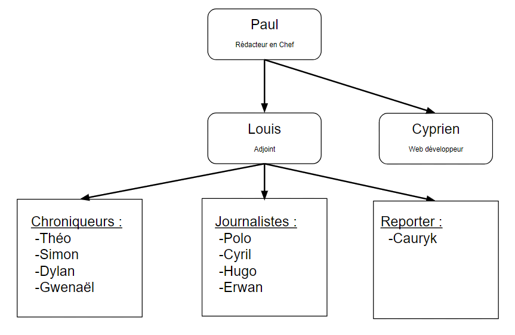

Bienvenue sur le site du magazine sportif "Prodige Mag" exclusivement dédié au cyclisme et au foot. Nous sommes toute une équipe qui prépare des articles pour vous divertir et vous faire découvrir de nouveaux points de vus que d'autres magazines beaucoup plus courant ont l'habitude de vous proposer. Nous ne retracerons pas simplement l'actualité car effectivement c'est ce que font les magazines plus connus. Nous allons retracer l'actualité du football ainsi que du cyclisme avec une analyse qui nous sera propre et qui sera primordiale dans notre journal, et en plus, nous vous proposerons différentes rubriques comme des sports méconnus du grand public que nous allons vous présenter, des présentations d'équipes, de joueurs, de coureurs.Nous sommes assez jeune pour nous lancer dans un tel projet (lycéen pour la plupart des membres de la rédaction) mais nous sommes motivés et nous pensons qu'avec de la patience, nous pourrons arriver à un beau format et à quelque chose qui plaira à bon nombre d'entre vous.

Vous pouvez d'ors et déjà vous abonnez à notre compte Twitter qui est disponible dans la rubrique "Nous Contacter".De plus, vous pouvez rejoindre notre serveur Discord qui est ouvert aux lecteurs en cliquand sur l'image dans la rubrique "Nous Contacter". C'est un logiciel de chat non payant sur lequel vous pourrez poser vos questions et nous y répondrons.
Nous avons également une chaine youtube qui est directement disponible dans l'onglet Prodige TV, où vous pourrez retrouver débats ou actualités. Pour les demandes plus "commerciales" nous vous demandons de nous contacter via notre adresse mail prodige-mag@laposte.net
La Rédac'
